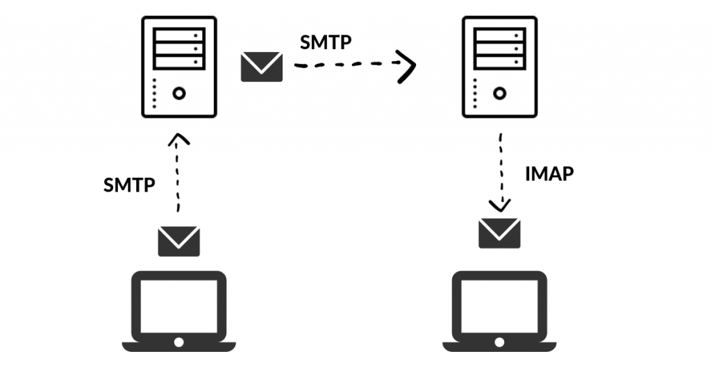

BytesOfProgress
Wiki
SMTP - Simple Mail Transfer Protocol
SMTP, or Simple Mail Transfer Protocol, is a communication protocol used for the transmission of electronic mail (email) on the internet. It operates on Port 25 or, for secure connections, port 587. of the TCP/IP protocol. Here is a technical breakdown:
When you initiate the sending of an email, your email client engages in a dialogue with an SMTP server. This server is then verifying your credentials to confirm your authority to send emails and cross-checking the accuracy of the recipient's email address.
Once authenticated, the SMTP server takes on the role of a digital courier, mapping out the most efficient route to the recipient's email server. DNS queries may be involved to fetch the Mail Exchange (MX) records.
SMTP relies on status codes to convey the outcome of each step. A "250" status code signifies a successful mail delivery, while a "550" code indicates that a mailbox cannot accept further messages.
back